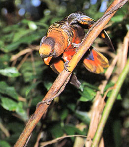

|
第９ ラバウルの思い出
 ふと桟橋から上陸地点付近を見たら、喬木に蔦がからみ真っ赤な花を咲かせ目にしみいる程でした。これが熱帯の自然だと 思い異常な感動を覚えました。日本の風景とは全然違っていました。筆舌では表現できない興奮を覚えました。戦前に南洋興発会社に勤めていたという中田上等兵の話によると、ラバウルは南太平洋随一の天然の良港です。第一次世 界大戦まではドイツ領であつたのでラバウルと呼んだ。第一次大戦後英領となり、ラボールと呼ぶようになった。ラボール はチョコレートが名物でお店にはチョコレートがいっぱい並べてあって、それを食べるのが楽しみの一つでしたと、話して くれた。その中田上等兵も東部ニユーギニアで戦死してしまった。 ラバウルには午前中入港しました。私は甲板で揚陸作業を見ていました。我々が乗ってきた輸送船に、はしけが横付けし、 クレーンで荷物の積み替え作業が始まった。その内に軍票がぎっしり入った一個の行李が、誤ってクレーンの網から落下し、 海中にゆらりゆらりとしづんでいく。水深五メートル位までは行李がよく見えましたが後は見えなくなってしまいました。 この様を見つめていましたが、何と！綺麗な海だろうと感心しました。一方この様子をじーっと主計大尉が見つめていまし た。彼は色が黒かったので、心の動揺を観察できなかった。経理将校がお金を無くしたという事は、戦死にもひとしいこと だと思いました。が、一々そんな事を気にしていたら、戦争は出来ないと納得しました。これが戦争でしよう。 上陸したのはその日の午後になりました。上陸したらまず、今夜宿営するところを探さねばならない。上陸地点の近くで、 てごろな平坦地がありました。大地は乾燥していて快適と考え、今夜はここに野営すると号令しました。早速、山口無線小 隊は天幕をはり準備に取り掛かりました。高射砲陣地から我々の様子を見ていた高射砲の下士官がやって来て、『ここは高 射砲陣地』ですと言う。それは甚だ心強いと思いました。ところが、下士官は『毎晩アメリカの飛行機が必ず偵察にやって くる。我が方はそれを迎え撃つので、その砲弾の破片が空から落ちてくる。一番危険です』と、おどかされた。それを聞い て吃驚して、早々に別の地点に移動しました。体験不足で初陣の失敗談でした。 |